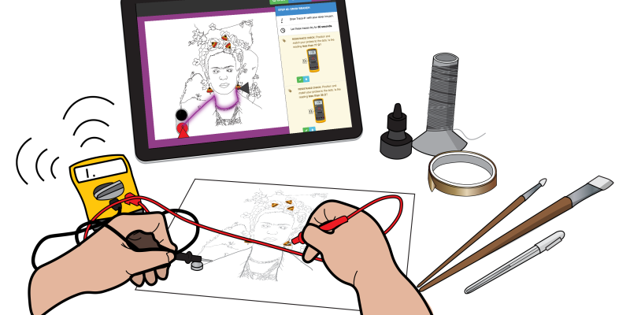
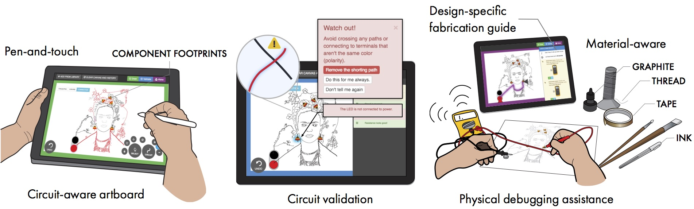
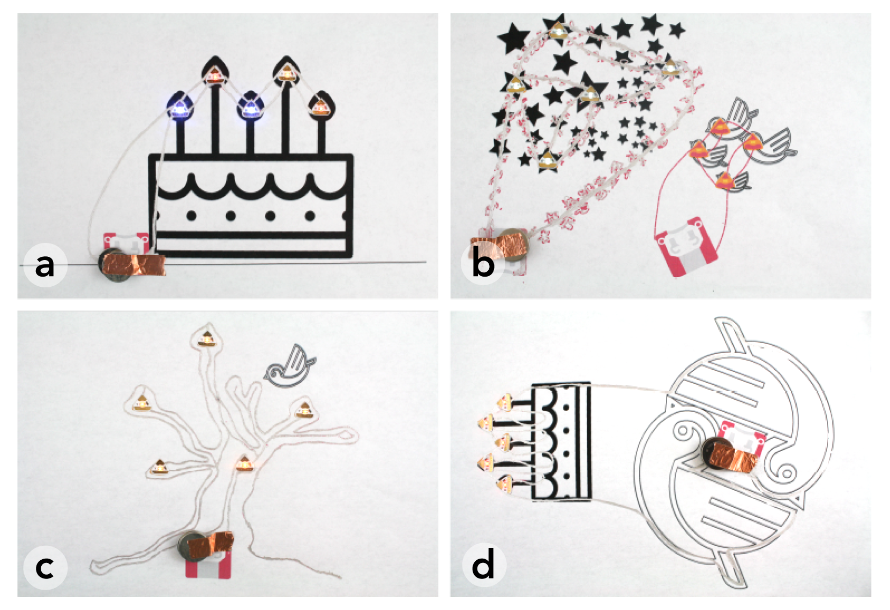
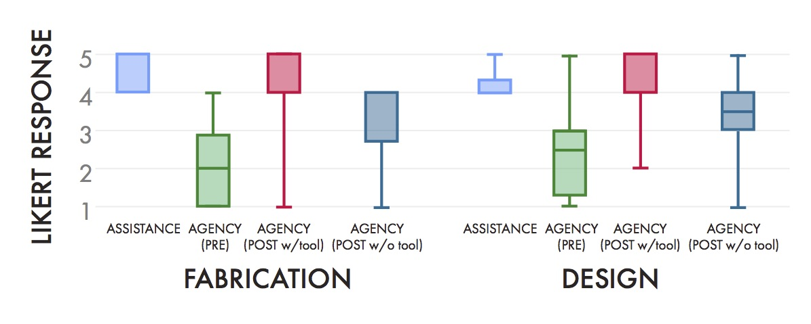

Jasper Tran O'Leary
This is a blurb about me

Aesthetic Electronics is a research project that I assisted with in the Hybrid
Ecologies lab under Professor Eric Paulos. The paper was headed by two graduate
students collaborating with affiliates at Adobe Research.
The paper contributes a design tool to allow novice users design aesthetic circuits
in new mediums, for example, silver ink and planar LEDs on papers. My role in the project
was testing the design tool on users and processing the resulting quantitative and
qualitative data.
Read the full paper here.
Research Contribution

As interactive electronics become increasingly intimate and personal, the design of circuitry
is correspondingly developing a more playful and creative aesthetic. Circuit sketching and design
is a multidimensional activity which combines the arts, crafts, and engineering broadening participation
of electronic creation to include makers of diverse backgrounds. In order to support this design
ecology, we present Ellustrate, a digital design tool that enables the functional and aesthetic
design of electronic circuits with multiple conductive and dielectric materials. Ellustrate guides
users through the fabrication and debugging process, easing the task of practical circuit creation
while supporting designers' aesthetic decisions throughout the circuit authoring workflow. In a
formal user study, we demonstrate how Ellustrate enables a new electronic design conversation that
combines electronics, materials, and visual aesthetic concerns.
My Role
The goal of our formal user study was to conduct a usability evaluation of the tool, specifically
observing how circuit design constraints influence the visual aesthetic and how fabrication assistance
influences agency. I helped conduct the study and document users' actions.
Below are the some of the users' final designs, which show show examples of different circuit-drawing
aesthetics. Part of my work on the paper was coding and characterizing these types of aesthetics to better
understand how designers navigate the constraints of circuits while maintaining an aesthetic. We coded designs
into the following categories: a) functionalist, b) mimetic, c) constructive, and d) symbolic.

Quantitatively, reponses on the Likert scale show that users felt that the tool improved their agency in
designing circuits.

- Designing, Sketching, and Fabricating through Digital Exploration.
- Cesar Torres, Joanne Lo, Isabel Yang, Jasper Tran O'Leary, Danny Kaufman, Wilmot Li, Mira Dontcheva, Eric Paulos
- UIST '16